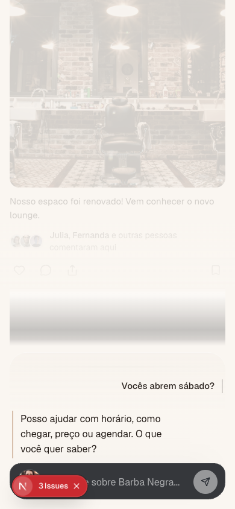
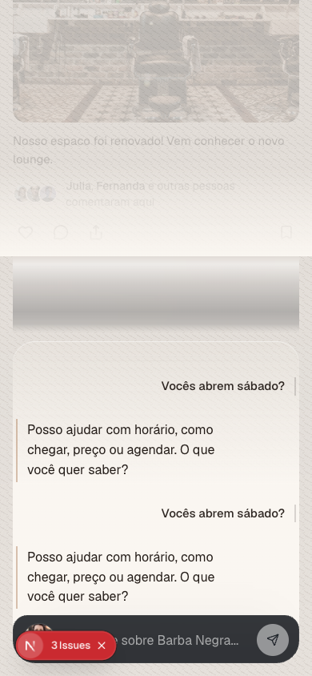

Surface cement — Medium default (390×844)
OFF = flat · ON = Medium baked in CSS · canvas + drawer only
OFF — idle
ON — idle
OFF — engaged
ON — engaged
OFF — drawer
ON — drawer
OFF — composer over feed ON — composer over feed
ON — composer over feed